Gather ye who uses humour as a coping mechanism.
Canola, koring, 'n grondpad en 'n dam teen sonsak. Sestien foto's. Swipe deur die stapel of sien als op die muur.
Swipe links of regs. Tik om groot te sien.
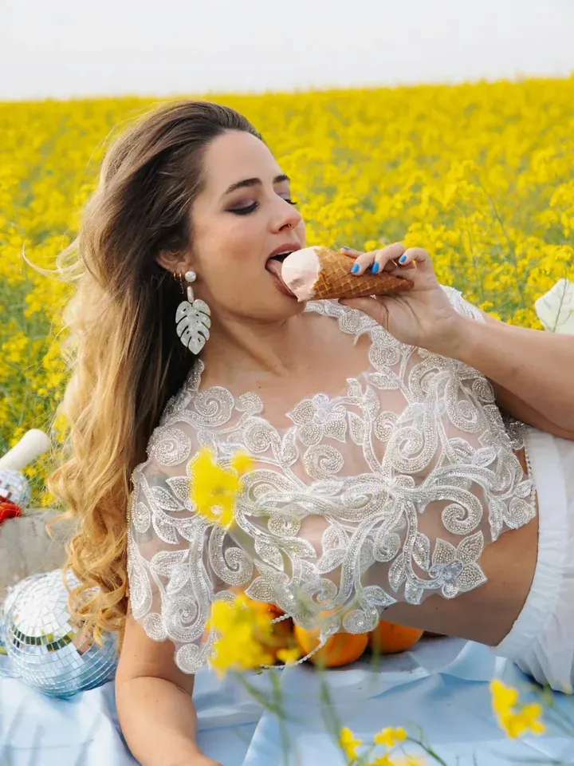
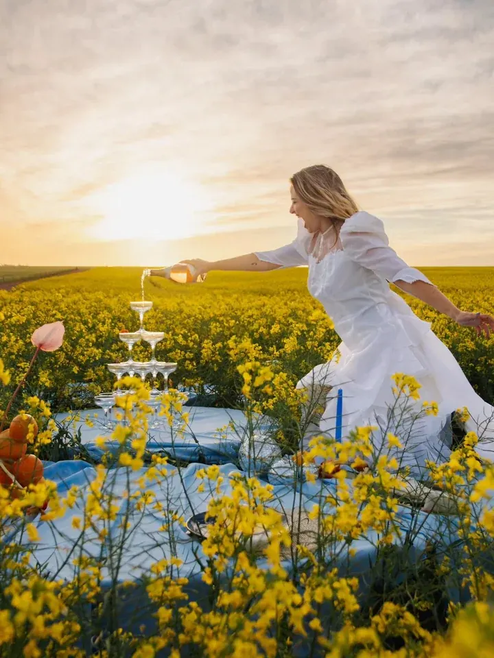
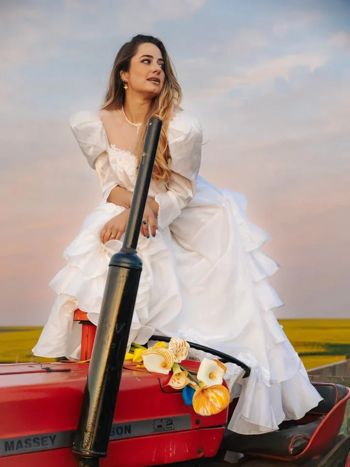
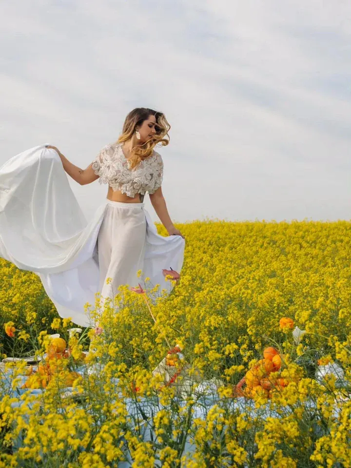
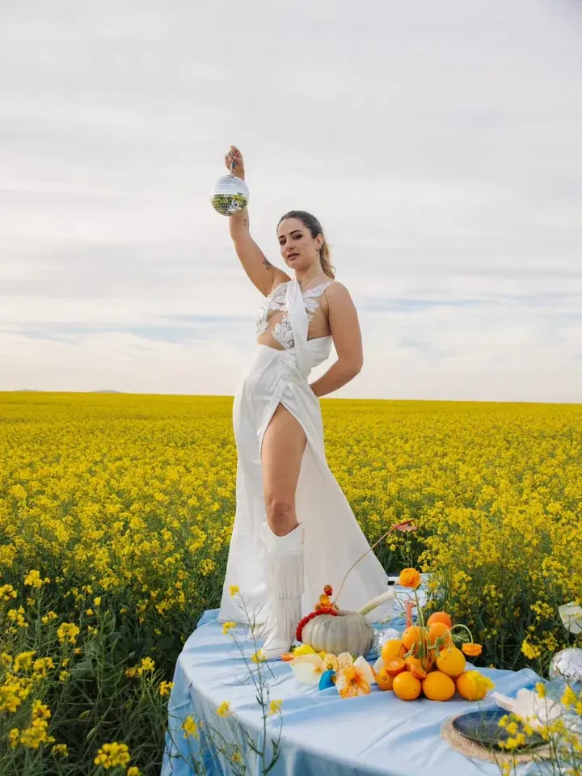
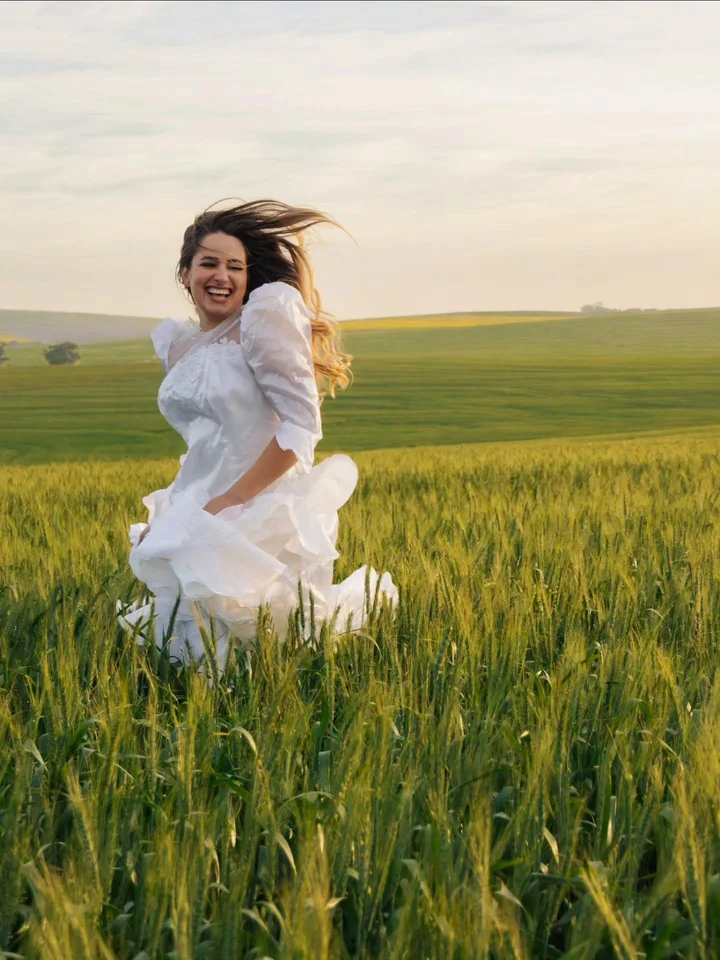
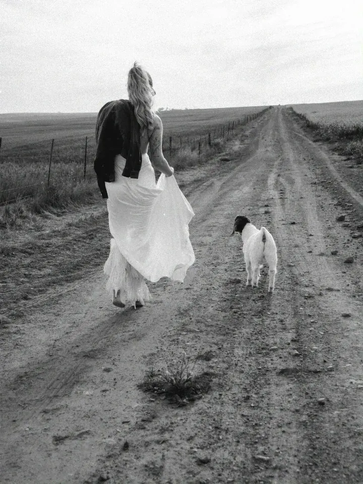
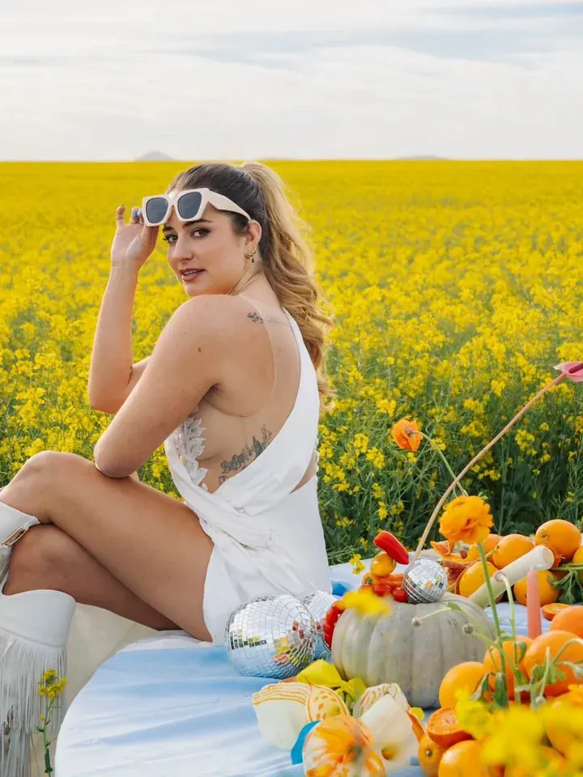
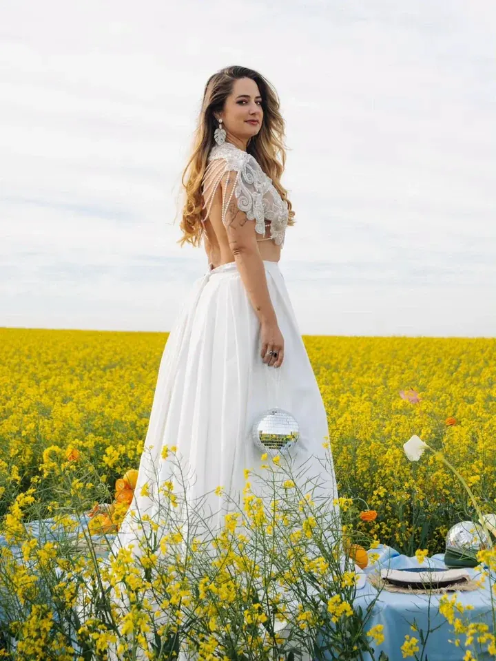
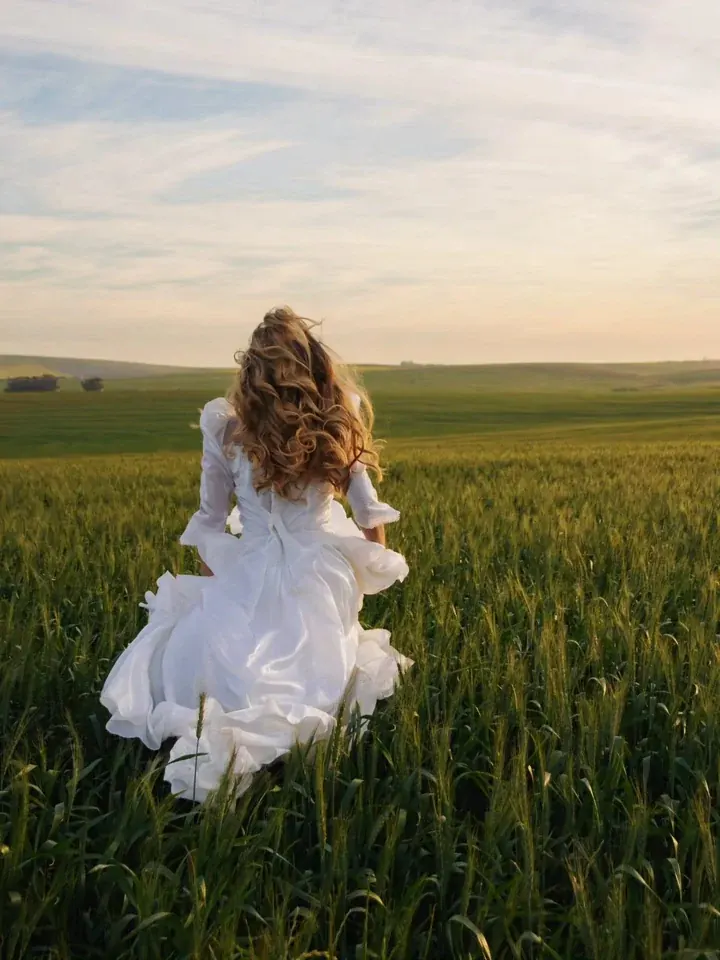
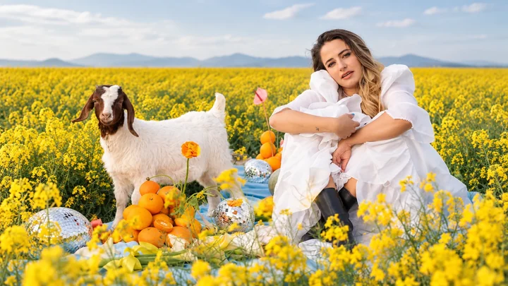